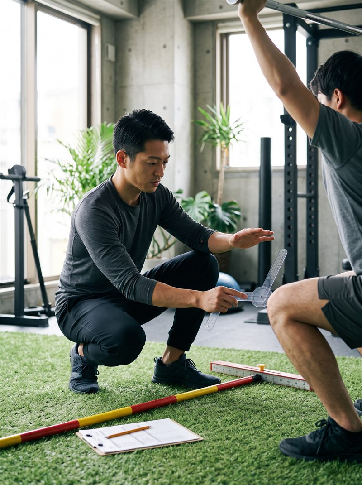
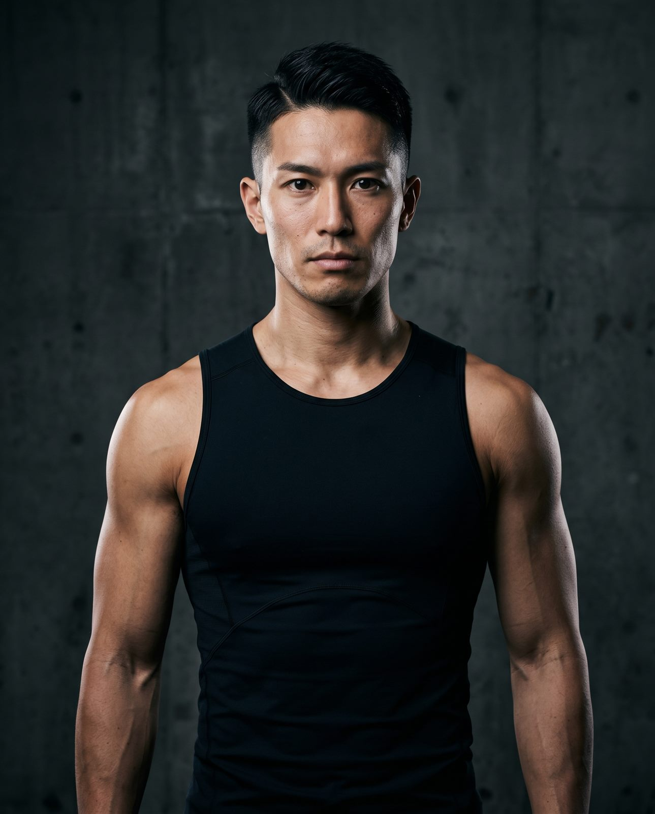
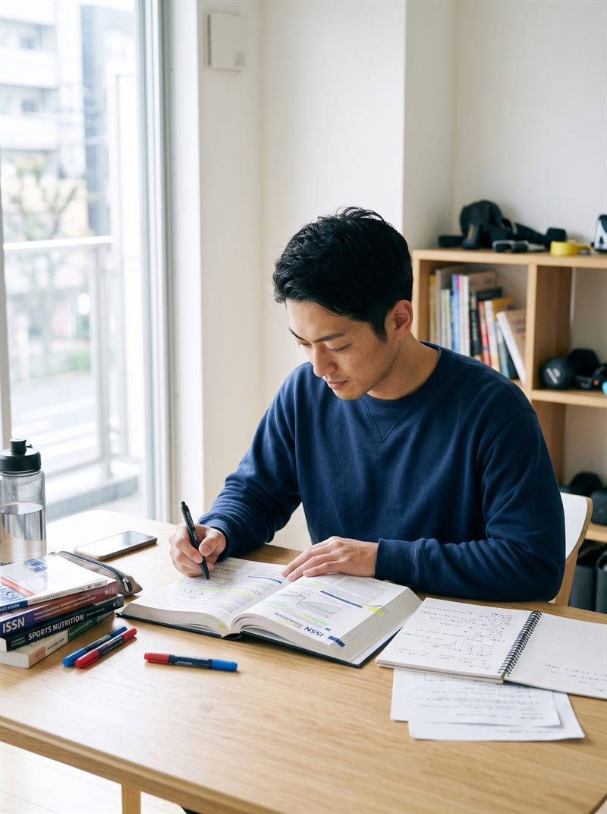
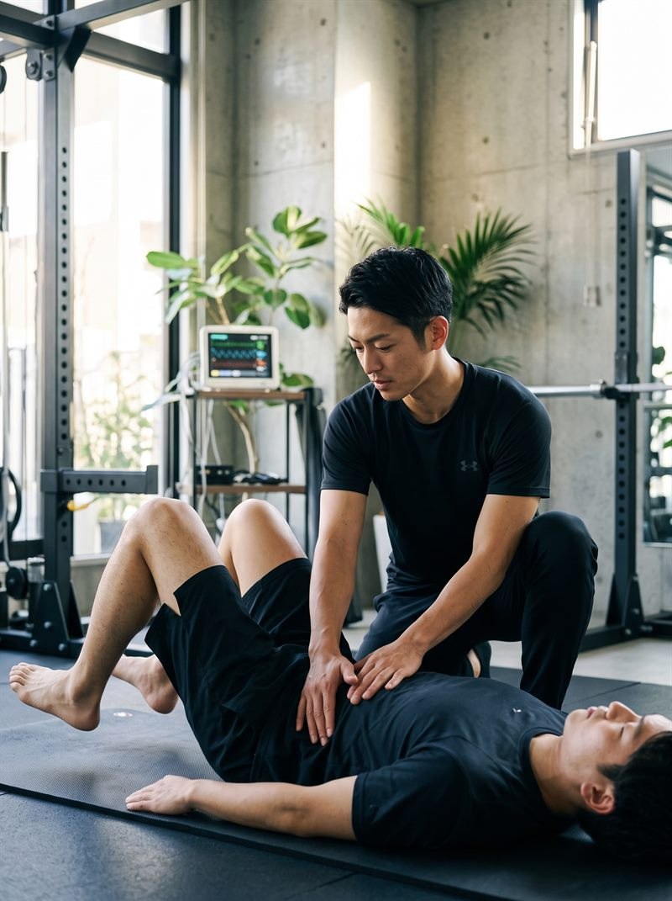
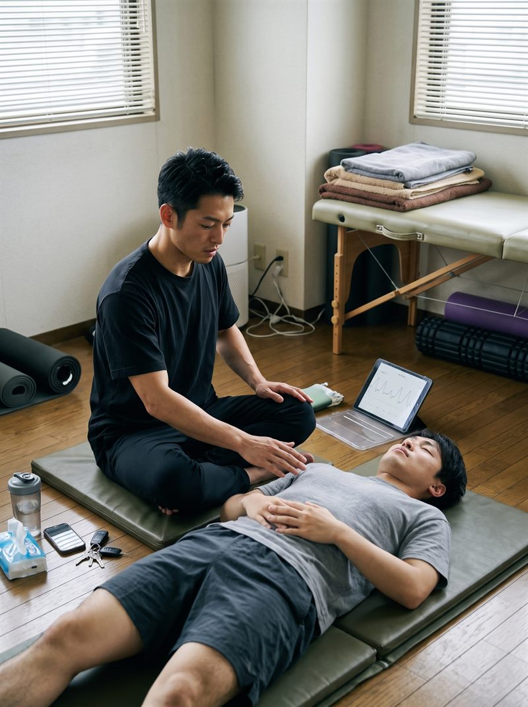
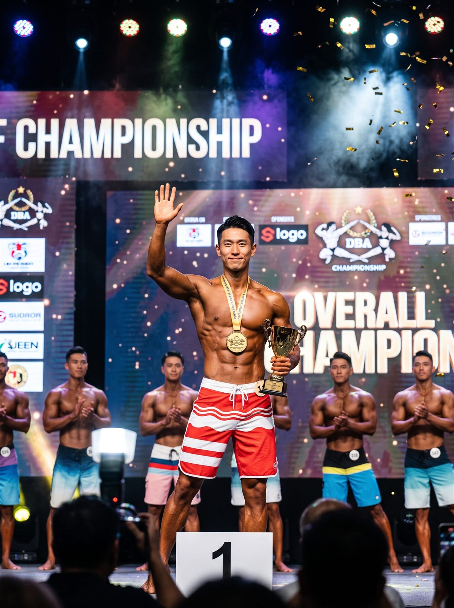
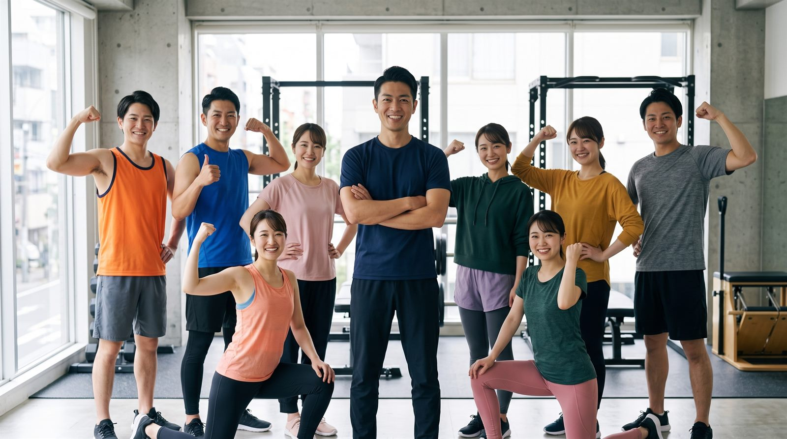
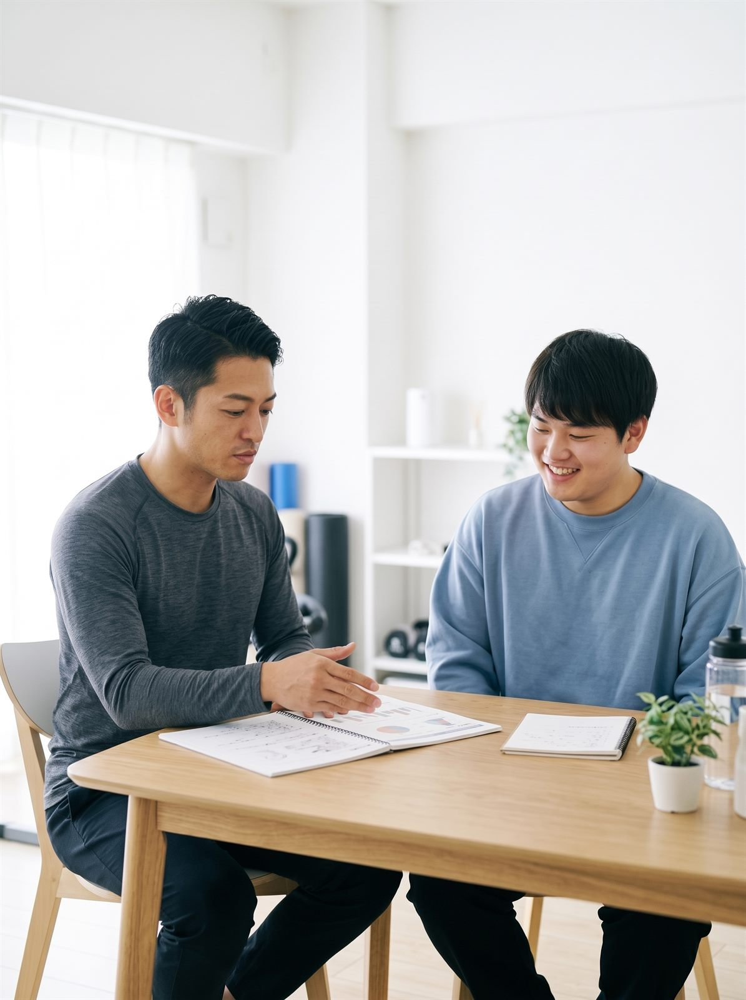
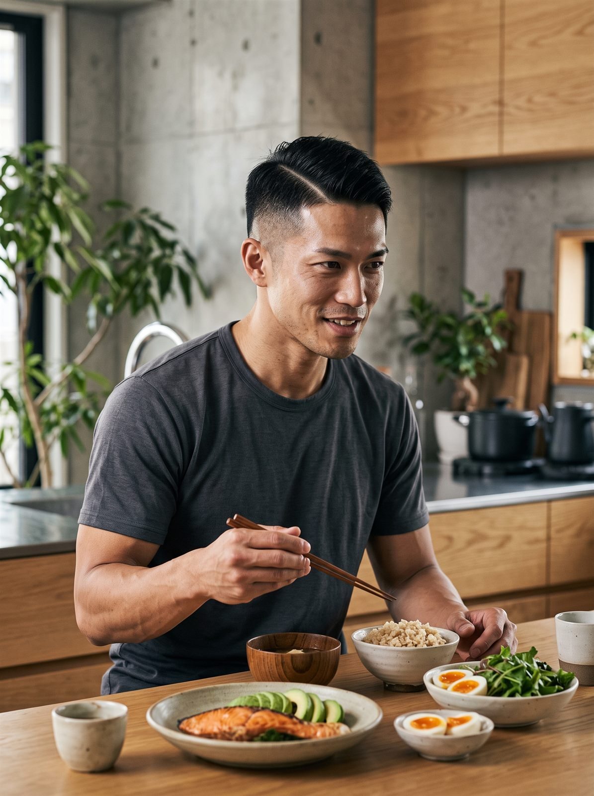

01 / BIOMECHANICS
動きと姿勢の確認
現在の動き方や気になる点を伺います。
本人確認中
SCROLL TO EXPLORE生物力学 × 功能营养学。迈向没有代偿动作、更加精炼的身体。
パーソナルプラン、しなやかな身体づくり、心身のコンディショニング。指導の背景にある経験と考え方をご紹介します。
从动作力线评估到周期化进阶训练，涵盖体态重建、运动表现提升与赛前调控，积累了扎实严谨的实战经验。
每一例均基于严苛的生物力学数据与生理节律定制，持续追踪复盘，帮助学员从根本告别代偿与反复反弹。
不搞过度消耗的填鸭式训练，注重学员自我觉知与持续自立，以细致陪伴建立起长期的师徒信赖与复训。
为确保每位学员都能获得全维度的专注跟进与饮食、睡眠动态调控，长期维持高水准执教品质，拒绝流水线扩招。

現在の動き方や気になる点を伺います。
本人確認中
日々の食事や生活リズムを一緒に振り返ります。
本人確認中
目標と状態に合わせた運動を考えます。
本人確認中
無理なく続けられる運動と休息のリズムを整えます。
本人確認中大会・出場経歴は、確認できた情報のみ掲載します。

大会名・年度・結果を確認中
動き、食事、休息を振り返り、一人ひとりに合った進め方を考えます。
运用 FMS 功能性动作筛查逐帧拆解动作链，识别深层受限代偿，从根源消除损伤风险并重塑关节正确对位。
以发育运动学（DNS）为理论基底，建立稳固腹内压（IAP）与神经肌肉反射，让力量输出无缝传导。
结合生理代谢节律与抗炎摄入标准，定制可持续坚持的膳食模型，拒绝以破坏自愈力为代价的极端节食。
通过呼吸法降阶过度亢奋的交感神经，结合深睡监测与筋膜减压，让身体在安静中完成深度修复。
写真だけから大会名、開催年、カテゴリーを推測しません。

対話から始め、目標に合わせて運動・食事・休息をデザイン。無理なく続けられる健やかな習慣を、一緒につくります。
パーソナルプランは運動だけではありません。しなやかな身体づくり、食習慣、ストレスケアと回復まで、暮らしに自然となじむ形で整えます。

目標、生活リズム、運動経験、現在のコンディションを確認します。
一人ひとりに合わせて、身体づくりと運動内容を設計します。
毎日のコンディションを支える、続けやすい食事を考えます。
呼吸、休息、リラックスもプログラムに取り入れます。
目標・生活リズム・運動経験を丁寧に確認し、一人ひとりに合わせた周期化プランを設計します。評価データをもとに、無理なく続けられる進め方を組み立てます。
動作の質を高め、代償のない身体へ。
毎日のコンディションを支える栄養設計。
呼吸・休息・睡眠をプログラムに取り入れ、回復まで含めてトータルに整えます。休むことも計画のうち。心身のリズムを穏やかに調えます。
目標、期間、日々の変化は、本人の確認後にご紹介します。実際の経験を大切にし、未確認の数字や効果を掲載することはありません。
健やかな暮らしは、いつも完璧でなくていい。食事と運動のリズムを大切にしながら、誰かと過ごす時間や静かなひとときも。

生活不是一场关于卡路里的精确计算，身体也不是需要时刻防备的对手。认真吃好每一餐，当身体得到真正需要的天然营养与滋养，代谢和自愈力就会在平淡的日常里悄然醒来。不为难自己，不苛求完美。你会发现，健康与轻盈，原来是这么自然、不着痕迹的一件事。


引进日本科学私教标准，从功能评估到周期进阶，根据不同人群的生活节奏与生理特质深度定制。
¥500 / 75分钟（仅限新客体验）
建议频率：单次体验诊断
¥600 / 节（24 课时套餐 · 有效期 4 个月）
建议频率：每周 2 - 3 次
专属权益：1对1全流程执教 + 每周 ISSN 饮食营养打卡调整 + 每 4 周体态力线复测
¥550 / 节（48 课时套餐 · 有效期 8 个月）
建议频率：每周 2 次长期维护
专属权益：全周期健康生命管理 + 长者家属生活照护协同方案 + 黄金预约时段优先锁定
每具身体都是一座独特的精密建筑。花费 1 分钟勾选你的现状与诉求，教练将在沟通时为你提供针对性的动作与代谢初评建议。